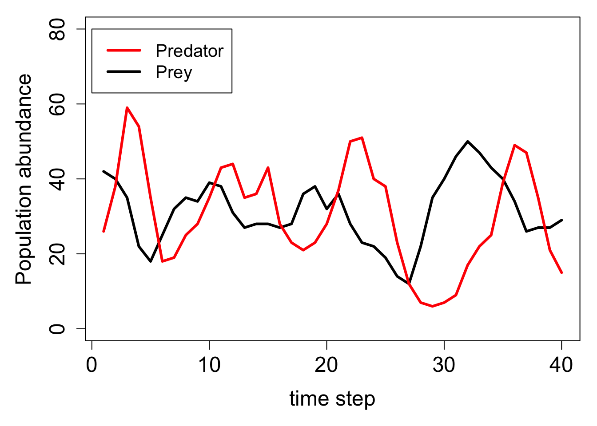

# =============================================================================
# Movement function
# =============================================================================
movement <- function(inds, xloc = 2, yloc = 3, xmax = 8, ymax = 8){
total_inds <- dim(inds)[1]; # Get the number of individuals in inds
move_dists <- c(-1, 0, 1); # Define the possible distances to move
x_move <- sample(x = move_dists, size = total_inds, replace = TRUE);
y_move <- sample(x = move_dists, size = total_inds, replace = TRUE);
inds[, xloc] <- inds[, xloc] + x_move;
inds[, yloc] <- inds[, yloc] + y_move;
# ========= The reflecting boundary is added below
for(i in 1:total_inds){ # For each individual i in the array
if(inds[i, xloc] > xmax){ # If it moved passed the maximum xloc
inds[i, xloc] <- xmax - 1; # Then move it back toward the centre
}
if(inds[i, xloc] < 1){ # If it moved below 1 on xloc
inds[i, xloc] <- 2; # Move it toward the centre (2)
}
if(inds[i, yloc] > ymax){ # If it moved passed the maximum yloc
inds[i, yloc] <- ymax - 1; # Then move it back toward the centre
}
if(inds[i, yloc] < 1){ # If it moved below 1 on yloc
inds[i, yloc] <- 2; # Then move it toward the centre (2)
}
}
# ========= Now all individuals should stay on the landscape
return(inds);
}
# =============================================================================
# Birth function
# =============================================================================
birth <- function(inds, lambda = 0.5, repr_col = 4){
total_inds <- dim(inds)[1]; # Get the number of individuals in inds
ind_cols <- dim(inds)[2]; # Total inds columns
inds[, repr_col] <- rpois(n = total_inds, lambda = lambda);
total_off <- sum(inds[, repr_col]);
# ---- We now have the total number of new offspring; now add to inds
new_inds <- array(data = 0, dim = c(total_off, ind_cols));
new_inds[,1] <- rnorm(n = dim(new_inds)[1], mean = 23, sd = 3);
new_inds[,2] <- sample(x = 1:8, size = dim(new_inds)[1], replace = TRUE);
new_inds[,3] <- sample(x = 1:8, size = dim(new_inds)[1], replace = TRUE);
# ---- Our new offspring can now be attached in the inds array
inds <- rbind(inds, new_inds);
return(inds);
}
# =============================================================================
# Death function
# =============================================================================
death <- function(inds, xlen = 8, ylen = 8, dcol = 5, xcol = 2, ycol = 3){
for(xdim in 1:xlen){ # For each row `xdim` of the landscape...
for(ydim in 1:ylen){ # For each col `ydim` of the landscape...
# Get the total number of individuals on the landscape cell
on_cell <- sum( inds[, xcol] == xdim & inds[, ycol] == ydim);
# Only do something if on_cell is more than one
if(on_cell > 1){
# Get all of the occupants on the cell
occupants <- which(inds[, xcol] == xdim & inds[, ycol] == ydim);
# Sample all but one random occupants to die
rand_occ <- sample(x = occupants, size = on_cell - 1);
# Then add their death to the last column of inds
inds[rand_occ, dcol] <- 1;
}
}
}
return(inds);
}
# =============================================================================
# Predation function
# =============================================================================
predation <- function(pred, inds, xcol = 2, ycol = 3, rcol = 4, dcol = 5){
predators <- dim(pred)[1]; # Predator number
pred[, dcol] <- 1; # Assume dead until proven otherwise
pred[, rcol] <- 0; # Assume not reproducing until proven otherwise
for(p in 1:predators){ # For each predator (p) in the array
xloc <- pred[p, xcol]; # Get the x and y locations
yloc <- pred[p, ycol];
N_prey <- sum( inds[, xcol] == xloc & inds[, ycol] == yloc);
# ----- Let's take care of the predator first below
if(N_prey > 0){
pred[p, dcol] <- 0; # The predator lives
}
if(N_prey > 1){
pred[p, rcol] <- 1; # The predator reproduces
}
# ----- Now let's take care of the prey
if(N_prey > 0){ # If there are some prey, find them
prey <- which( inds[, xcol] == xloc & inds[, ycol] == yloc);
if(N_prey > 2){ # But if there are more than 2, just eat 2
prey <- sample(x = prey, size = 2, replace = FALSE);
}
inds[prey, dcol] <- 1; # Record the prey as dead
}
} # We now know which inds died, and which prey died & reproduced
# ---- Below removes predators that have died
pred <- pred[pred[,dcol] == 0,] # Only survivors now left
# ----- Below adds new predators based on the reproduction above
pred_off <- sum(pred[, rcol]);
new_pred <- array(data = 0, dim = c(pred_off, dim(pred)[2]));
new_pred[,1] <- rnorm(n = dim(new_pred)[1], mean = 23, sd = 3);
new_pred[,2] <- sample(x = 1:8, size = dim(new_pred)[1], replace = TRUE);
new_pred[,3] <- sample(x = 1:8, size = dim(new_pred)[1], replace = TRUE);
pred <- rbind(pred, new_pred);
# ----- Now let's remove the prey that were eaten
inds <- inds[inds[,dcol] == 0,]; # Only living prey left
# Now need to return *both* the predator and prey arrays
pred_prey <- list(pred = pred, inds = inds);
return(pred_prey);
}
# =============================================================================
# Simulate predator-prey dynamics
# =============================================================================
# ----- Initialise individuals (prey)
inds <- array(data = 0, dim = c(40, 5));
inds[,1] <- rnorm(n = dim(inds)[1], mean = 23, sd = 3);
inds[,2] <- sample(x = 1:8, size = dim(inds)[1], replace = TRUE);
inds[,3] <- sample(x = 1:8, size = dim(inds)[1], replace = TRUE);
# ----- Initialise individuals (predator)
pred <- array(data = 0, dim = c(20, 5));
pred[,1] <- rnorm(n = dim(pred)[1], mean = 23, sd = 3);
pred[,2] <- sample(x = 1:8, size = dim(pred)[1], replace = TRUE);
pred[,3] <- sample(x = 1:8, size = dim(pred)[1], replace = TRUE);
# ---- Start the simulation as before
ts <- 0;
time_steps <- 40;
inds_hist <- NULL;
pred_hist <- NULL;
while(ts < time_steps){
pred <- movement(pred);
inds <- movement(inds); # Note: I increased prey birth rate
inds <- birth(inds, lambda = 1.5);
pred_prey_res <- predation(pred = pred, inds = inds);
pred <- pred_prey_res$pred;
inds <- pred_prey_res$inds;
inds <- death(inds);
inds <- inds[inds[, 5] == 0,]; # Retain living
ts <- ts + 1;
inds_hist[[ts]] <- inds;
pred_hist[[ts]] <- pred;
}
# =============================================================================
# Print the results
# =============================================================================
ind_abund <- array(data = NA, dim = c(40, 3));
for(i in 1:40){
ind_abund[i, 1] <- i; # Save the time step
ind_abund[i, 2] <- dim(inds_hist[[i]])[1]; # rows in inds_hist[[i]]
ind_abund[i, 3] <- dim(pred_hist[[i]])[1]; # rows in pred_hist[[i]]
}
colnames(ind_abund) <- c("time_step", "abundance", "predators");
print(ind_abund); time_step abundance predators
[1,] 1 42 26
[2,] 2 40 38
[3,] 3 35 59
[4,] 4 22 54
[5,] 5 18 35
[6,] 6 25 18
[7,] 7 32 19
[8,] 8 35 25
[9,] 9 34 28
[10,] 10 39 35
[11,] 11 38 43
[12,] 12 31 44
[13,] 13 27 35
[14,] 14 28 36
[15,] 15 28 43
[16,] 16 27 28
[17,] 17 28 23
[18,] 18 36 21
[19,] 19 38 23
[20,] 20 32 28
[21,] 21 36 37
[22,] 22 28 50
[23,] 23 23 51
[24,] 24 22 40
[25,] 25 19 38
[26,] 26 14 23
[27,] 27 12 12
[28,] 28 22 7
[29,] 29 35 6
[30,] 30 40 7
[31,] 31 46 9
[32,] 32 50 17
[33,] 33 47 22
[34,] 34 43 25
[35,] 35 40 39
[36,] 36 34 49
[37,] 37 26 47
[38,] 38 27 35
[39,] 39 27 21
[40,] 40 29 15# =============================================================================
# Plot the results
# =============================================================================
par(mar = c(5, 5, 1, 1));
plot(x = ind_abund[,2], type = "l", lwd = 3, ylim = c(0, 80),
xlab = "time step", ylab = "Population abundance", cex.axis = 1.5,
cex.lab = 1.5);
points(x = ind_abund[,3], type = "l", lwd = 3, col = "red");
legend(x = 0, y = 80, legend = c("Predator", "Prey"), col = c("red", "black"),
cex = 1.25, lty = c("solid", "solid"), lwd = c(3, 3));